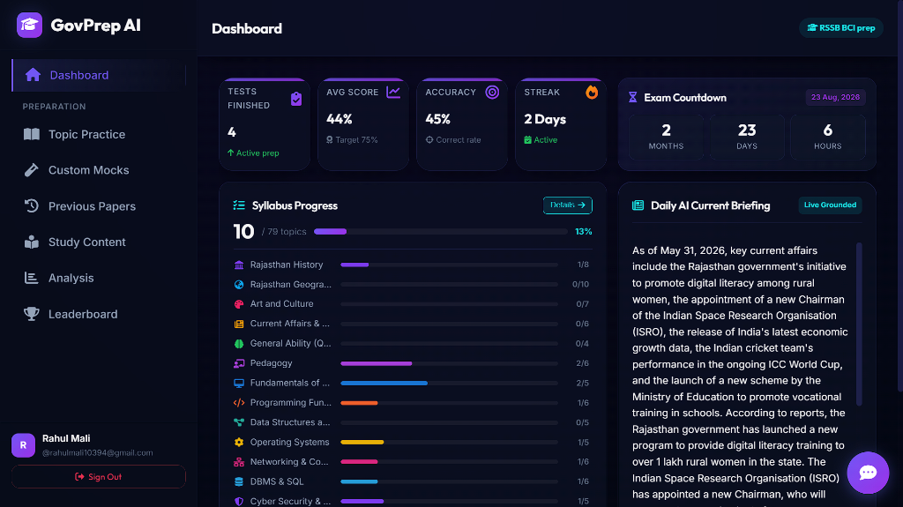

A high-performance progressive web app (PWA) and Ionic Capacitor Android application built to help aspirants survive the RSSB Rajasthan Computer Instructor Exam. Fully backed by Supabase and a dual Gemini/Groq AI study engine.
Preparing for the Rajasthan Computer Instructor (Basic & Senior) Exam is a recipe for mental collapse. The syllabus contains over 79 distinct topics. It expects you to master everything in Paper I (Rajasthan history, art, culture, geography, and general mental ability) AND Paper II (CS fundamentals including Data Structures, OOPs, Computer Architecture, OS, Networking, DBMS, and *Pedagogy*—because apparently you need to know how to teach a child to count in binary).
Typical exam preparation consists of studying dry 400-page scanned PDFs downloaded from shady Telegram groups, guessing if a question key is correct, and crying silently in a corner. I wanted to build a modern, high-fidelity tool that actually helps aspirants structure their preparation, get instant feedback, and stay motivated.
The result is GovPrep AI, which is currently live and deployed as a web application at bci-exam-prep.vercel.app and compiled as a native mobile APK.
If you look at the app store, most competitive exam prep apps look like they were designed during the early Windows 95 era and have the responsiveness of cold molasses. They suffer from critical UX failures:
Hitting users with massive, unformatted blocks of study guides. It's the ultimate insomnia cure. No engagement, no formatting, and absolutely zero guidance on difficult concepts.
When you get a mock test question wrong, you get a generic "Option C is correct" response. You're left wondering *why* the compiler resolved it that way, with no way to follow up.
Without a persistent, ticking visual countdown, you fall into the trap of "I have plenty of time." Spoilers: you don't. You need visual urgency directly on your dashboard.
The Frontend: Built using Vanilla ES6 JavaScript, HTML5, and custom CSS variables. Deployed on Vercel for instant loads and configured as a progressive web app. No heavy UI libraries like React or Angular to slow down asset delivery. It runs at a smooth 60fps on low-end mobile devices.
The Mobile Shell: Packaged into a native Android application using Ionic Capacitor. To bypass the pain of local Java/Gradle build configuration mismatches on random developer laptops, I wrote a PowerShell script that overrides system JAVA_HOME to hook directly into a bundled, portable JDK 21 folder, compiling the debug APK instantly.
The Dual-AI Study Core: Instead of bottlenecking user experience on a single model, GovPrep AI splits the load:
The Python ETL Pipeline: Let's be honest: manually typing 200 past year questions with 4 options each from raw PDF papers into a database is a form of digital torture. I wrote custom Python scripts to parse the raw text papers, automatically map correct option indexes, tag them with subjects and syllabus topics, and upload them securely to Supabase.
To manage user streaks, mock history, cached study guides, and previous year papers (PYQs), we integrated Supabase PostgreSQL. Here is the SQL schema utilized to back the application data sync:
create table public.user_data ( id uuid references auth.users on delete cascade primary key, display_name text, test_history jsonb default '[]'::jsonb, streak_info jsonb default '{"count": 0, "lastDate": null}'::jsonb, studied_topics jsonb default '[]'::jsonb, target_exam text default 'BCI', created_at timestamptz default now() ); -- Enable RLS and setup policies alter table public.user_data enable row level security; create policy "Anyone can read user_data" on public.user_data for select using (true); create policy "Users can update own data" on public.user_data for update using (auth.uid() = id);
create table public.pyqs ( id bigint generated always as identity primary key, paper_type text not null, -- 'basic_p1', 'basic_p2', 'senior_p1', etc. subject text, topic text, question text not null, options jsonb not null, -- Array of strings e.g. ["A", "B", "C", "D"] correct_index integer not null, explanation text, created_at timestamptz default now() );
Below is a high-fidelity screenshot of the main dashboard in active use, featuring the real-time exam countdown timer, bento performance metrics, daily AI current affairs briefing, and syllabus progress tracking:

I didn't want to build just another dashboard. The application implements features specifically engineered to fight procrastination and provide immediate value:
Positions a giant exam countdown timer right at the top of the dashboard. August 23, 2026 is ticking down second-by-second. Because nothing drives preparation quite like healthy, existential panic.
Instead of copying a question, opening a tab, and paste-querying an LLM, you just click the float chat. It opens pre-populated with the question's context. One-click sanity check.
Tracks weekly questions answered, score percentages, and active streaks. Because if you aren't motivated by learning, you might be motivated by showing off that you scored higher than 'Aspirant-382'.
Explore the live web platform, grab the compiled Android APK directly, or view the open-source repository on GitHub.
GovPrep AI demonstrates the feasibility of building premium, fast-loading educational applications without the bloat of major frameworks, using direct client-side service wrappers (Supabase and LLM integrations). Packing it via Capacitor makes distribution cheap and effective.
Next features include incorporating localized test reports with heatmaps of syllabus weaknesses, and adding a collaborative peer-grilling system (because misery loves company).